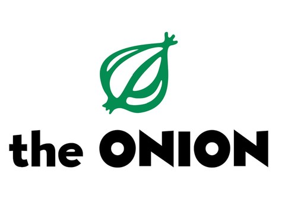
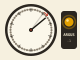
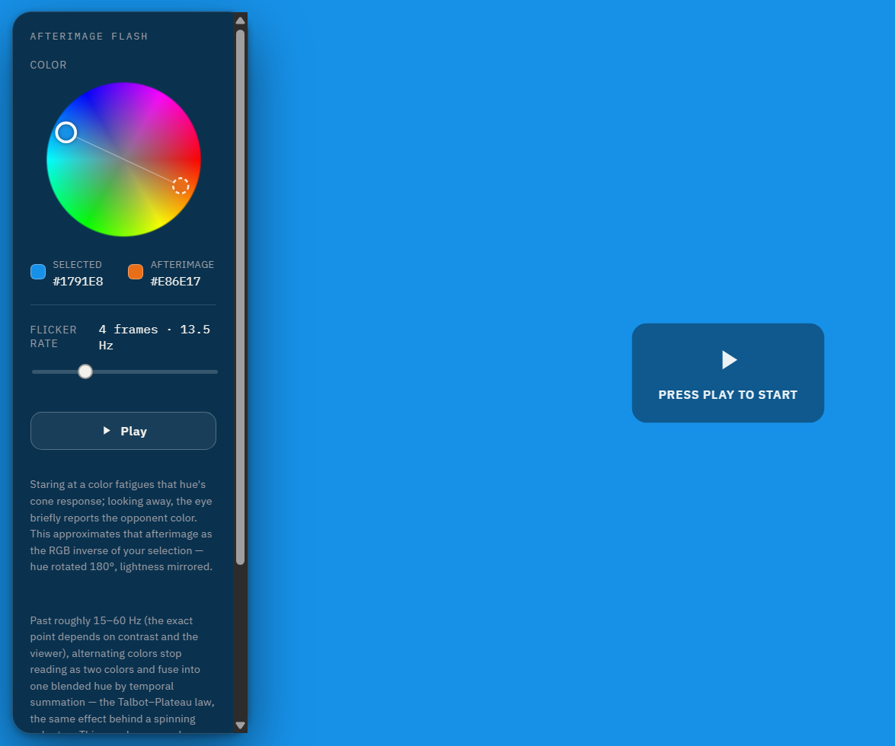
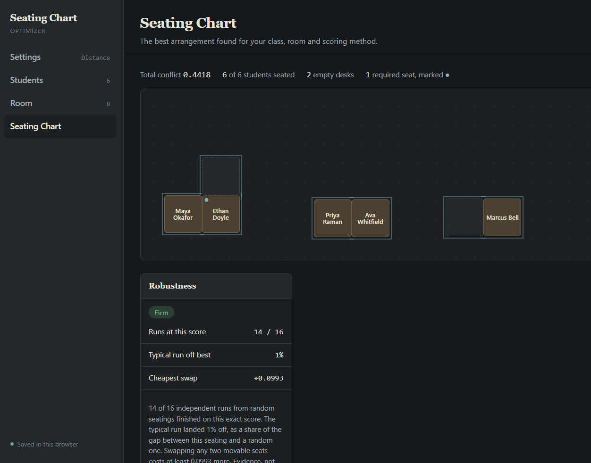
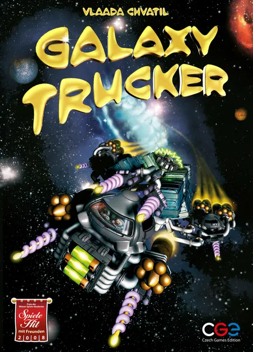

| Contents |
Cool ProjectsClick a project to read more about it. This is definitely an inluded-but-not-limited-to type thing, I'm human.  The OnionifierOctober 2026 Have you ever visited a news site and realized you wished you were reading The Onion? Me too. Now you can, with the chrome extension I built, called Onionifier. Github is linked above.  The Mackworth Clock (+ AI)October 2026 SLOP ALERT. Everything below this paragraph was generated completely with Claude Code. I set up a docker sandbox and wanted to see what it could do so I just told it to surprise me with something creative overnight. As you can see, it is impressive but also slop. I told Claude (an AI) to "make something fun, surprise me" as a single web page. It rebuilt the Mackworth Clock, a 1948 vigilance test where you watch a ticking pointer for the occasional double jump. Then it added an AI copilot whose reliability is secretly randomized, so you can see whether your trust in it tracks how good it actually is.  Opponent Color FlasherSeptember 2026 I was reading about impossible colors (eg greenish red) and I was curious what color something looks like if you alternate opponent colors rapidly. It mainly just hurts one's eyes. BE CAREFUL, MAY CAUSE HEADACHE ETC.  Seating Chart OptimizerSeptember 2026 My partner is a middle school teacher, and she struggles with finding good seating arrangements. I made a tool that allows teachers to input their room layout and how well students get along, and outputs a near-optimal seating arrangement for their class. Rough vibe-code, not polished. Human Factors Trivia SetOctober 2025 I created this human factors themed trivia set for our HFES student chapter at ISU. Feel free to borrow the slideshow and use it and the accompanying answer sheet.  Galaxy Trucker Cheat SheetSeptember 2025 The rules to Galaxy Trucker are not too hard, but the rule sheet is tough to parse. For a class project, we created a human-centered cheat sheet to make the rules easier to understand. |